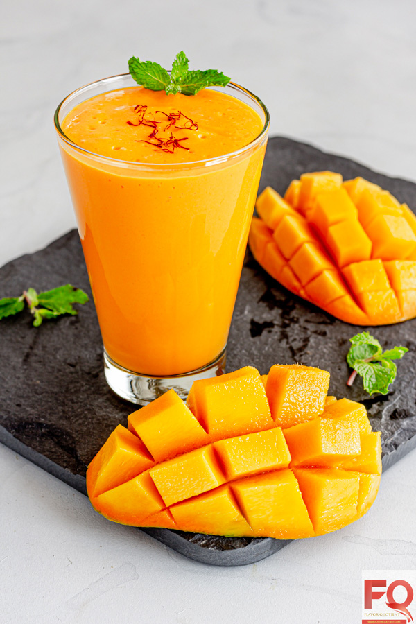

Boil the potatoes until soft but retain their shape. Cool and peel the skin. Cut them into small cubes or dice. This can be done ahead of time.
Mix tamarind paste with water, add roasted cumin powder, red chili powder, and a pinch of salt. Adjust the consistency so it's pourable but not too thin. You can also use store-bought tamarind chutney for convenience.
Blend fresh mint leaves, green chillies, lemon juice, and a pinch of salt into a smooth paste. Add water if needed to achieve a drizzling consistency.
In a bowl, combine boiled potatoes with roasted peanuts, diced tomatoes, diced onions, and chopped cilantro. Drizzle with tamarind chutney and mint chutney. Sprinkle chaat masala, cumin powder, and black salt.
Toss gently and serve right away while the potatoes are still warm and contrasting with the chutney. Garnish with fresh cilantro and sev (optional). Aloo Chaat is best eaten fresh.
💡 Chef's Tip: Aloo Chaat is best served fresh and warm. You can prep the potatoes and chutneys ahead of time, but assemble just before serving. Use Kashmiri chili powder for a beautiful color. Chaat masala is the key to authentic flavor.